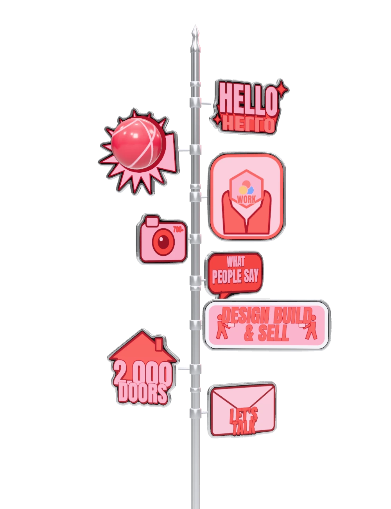
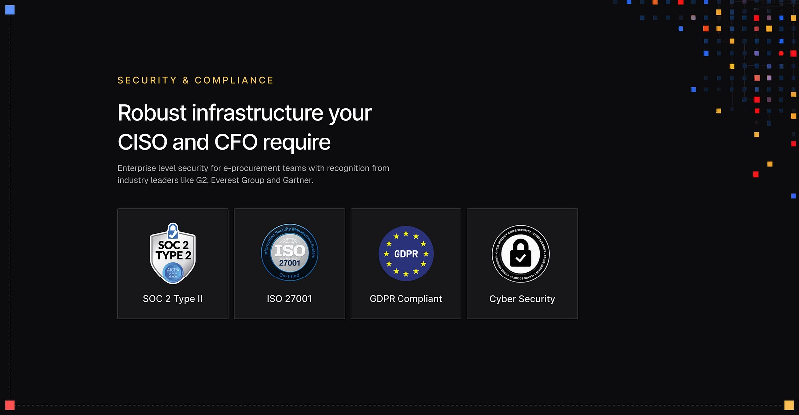
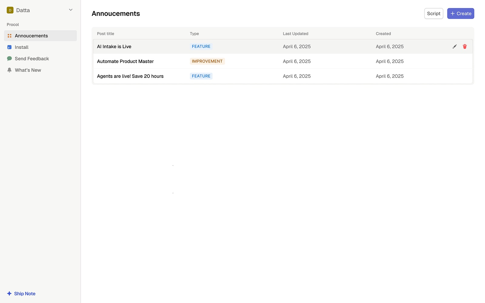
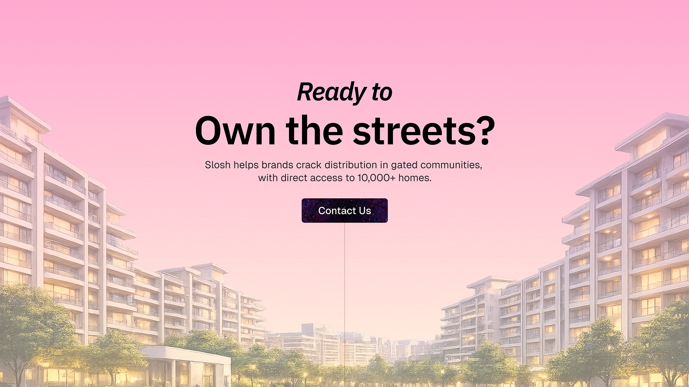
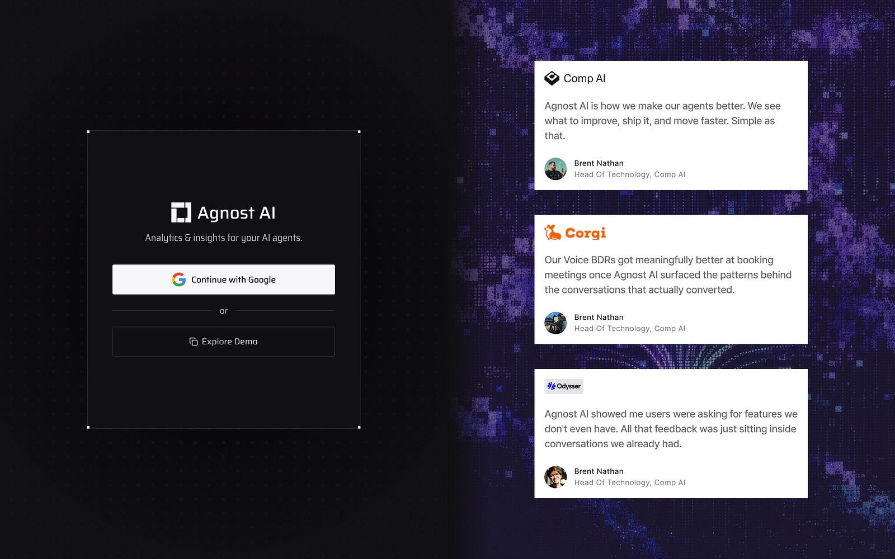
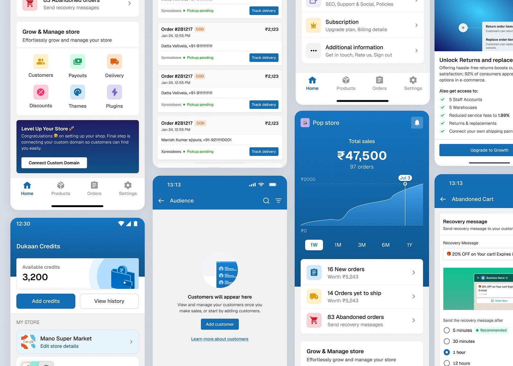
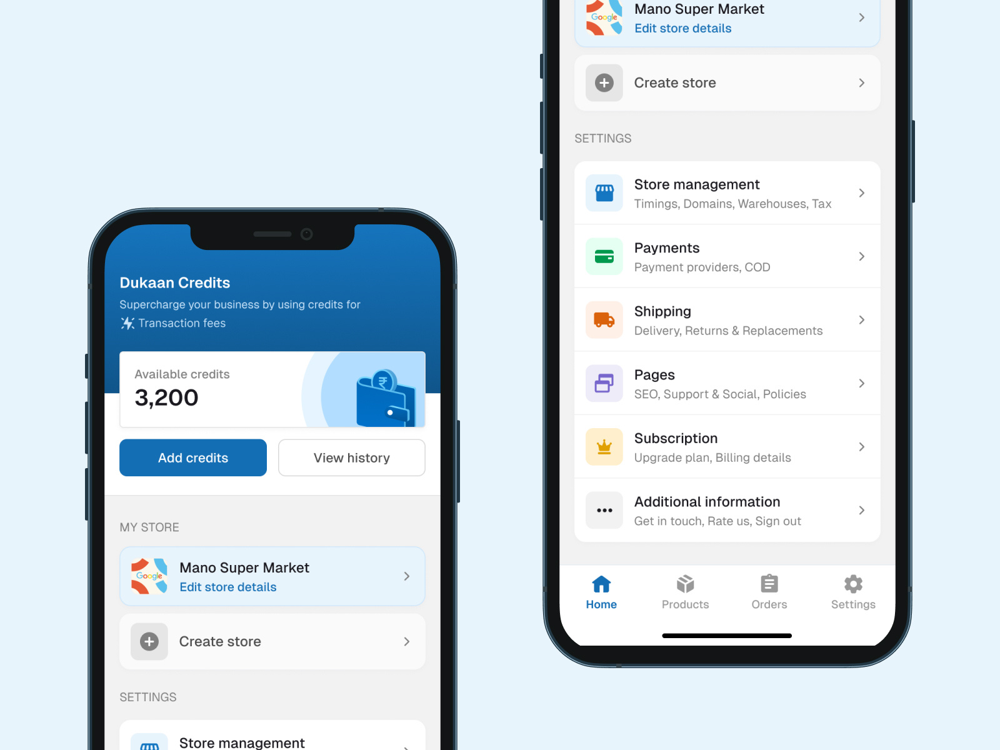
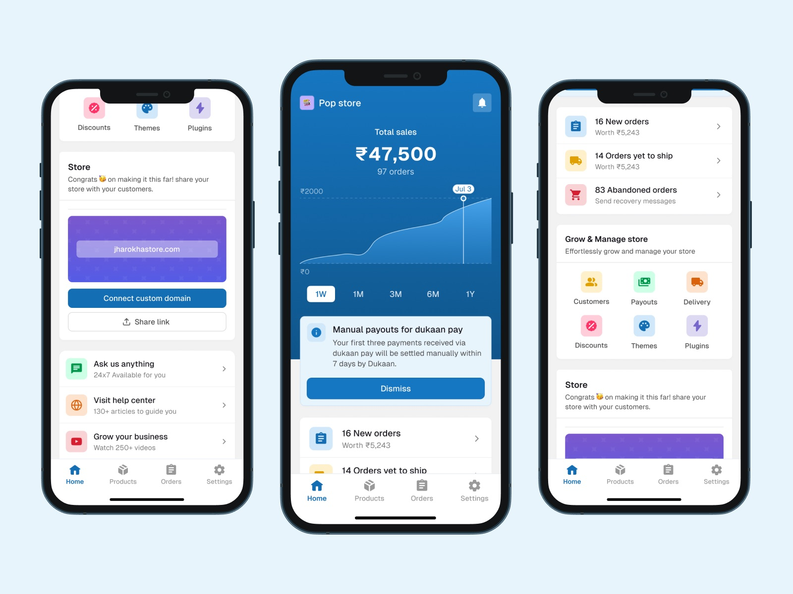

Hello there! I'm Datta Velivela
Senior Product Designer at  ProcolProcolAug 2024 - presentA B2B procurement platform - sourcing, RFQs and e-auctions for enterprise buying teams.Recognised and rewarded for 3 quarters, in a team of 5.Visit website →
ProcolProcolAug 2024 - presentA B2B procurement platform - sourcing, RFQs and e-auctions for enterprise buying teams.Recognised and rewarded for 3 quarters, in a team of 5.Visit website →
ex  Dukaan,DukaanJun 2023 - Jul 2024An e-commerce platform that lets small sellers set up and run an online store.Visit website → ex
Dukaan,DukaanJun 2023 - Jul 2024An e-commerce platform that lets small sellers set up and run an online store.Visit website → ex  Pine LabsJan - Mar 2023A merchant commerce and payments company - POS terminals and checkout for retailers.Visit website →
Pine LabsJan - Mar 2023A merchant commerce and payments company - POS terminals and checkout for retailers.Visit website →
For the last 3.5 years, I've worked across product and design, though my work extends into GTM engineering and frontend. At Procol, I work on AI experiences.
Outside work, I've knocked on 2,000+ doors for our first laundry customers and sold AI-generated visuals to brands. I like messy problems, small teams, and building from zero.
Agentic source-to-pay platformProcol.in → Procol.ai
Solely owned design for Procol’s agentic products across source-to-pay and analytics, while leading product solutioning with the PM. Worked closely with three engineers on system design and took these products from concept to production, contributing ₹X crore in revenue with a team of five.

AI Demo PlatformProcol, R&D
Solely built new AI ideas, including Intake AI, and Procol’s demo platform. It let us experiment faster without an engineering dependency, moved multiple deals forward, and contributed to a ₹X crore enterprise win with a lean four-person team: one PM, two in sales, and myself.

The app, the dashboard, and the design systemDukaan, growth
PM, design and support in a team of 15, owning the app and the web dashboard. The revamp lifted activation, adoption and conversion, and NRR with them. One design system replaced the separate web and mobile ones, and Mixpanel tracking on every tap meant the next call had data behind it.

 Under NDA
Under NDA
what people sayafter working with me
 Aman GuptaSenior Product Designer at Mysa
Aman GuptaSenior Product Designer at Mysa
He grew from a strong visual designer into someone who could own new modules, unlock business opportunities, and build AI experiences.
He is uncompromising when it comes to creating the best experiences and constantly pushes the team to experiment, move fast, and think bigger. Gurudatta brings a great mix of craft, ownership, and curiosity, and I'd highly recommend him.
 Dawar MirStaff Designer at PhonePe · ex Head of Design Dukaan
Dawar MirStaff Designer at PhonePe · ex Head of Design Dukaan
What stood out most was his ability to combine strong design craft with deep curiosity and ownership. He was never limited by what he already knew, always eager to learn, pick people's brains, and take things forward on his own. Beyond being a strong designer, he showed genuine interest in the product and could be trusted to take responsibility and drive towards the goal without needing to be pushed.
 Shubh PorwalSenior Product Engineer @Supernova AI
Shubh PorwalSenior Product Engineer @Supernova AI
His designs consistently struck the perfect balance between visual appeal and technical feasibility. He actively sought input from the engineering team, ensuring his designs were not just beautiful, but also implementable and efficient. His ability to wear multiple hats - from designer to quasi-product manager - truly sets him apart.
 Saranya DeviProduct Designer at Stitch
Saranya DeviProduct Designer at Stitch
He's an exceptional product designer, blending technical skill with a deep understanding of user needs. He consistently creates intuitive designs and values feedback, making him a valuable team player. His ability to simplify complexity and balance aesthetics with functionality is impressive.
 Ashmit SrivastavaSenior Product Manager | AutoMint
Ashmit SrivastavaSenior Product Manager | AutoMint
He brings exceptional design skills and a user-centric approach to any area he's working on, delivers high-quality designs and works collaboratively with cross-functional teams. A talented and dedicated designer who would be an asset to any organization.
 Tanya RedkarSenior Product Designer · HighLevel
Tanya RedkarSenior Product Designer · HighLevel
Right from the start he has shown a keen interest to learn new things. He is a keen observer and absorbs every detail of a brief provided before coming up with the design flow.
He is a reliable and curious and this is a great mix of personality traits for any organisation. He will do an extraordinary job wherever he goes.
What I pushed2026
Visual workdribbble

Explorations - Trust Section Agnost.ai - Pricing Page
Agnost.ai - Pricing Page
Product Announcements
Footer
Agnost.ai - Login Page
Redesigned Experience for Sellers | Dukaan App
Settings - Dukaan
New Home - Dukaan